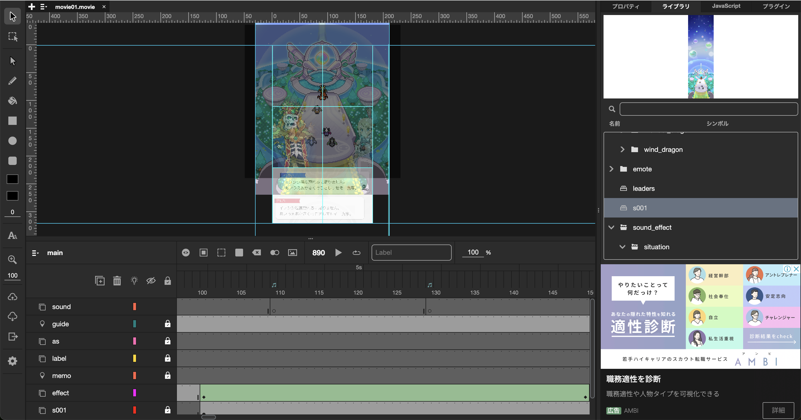
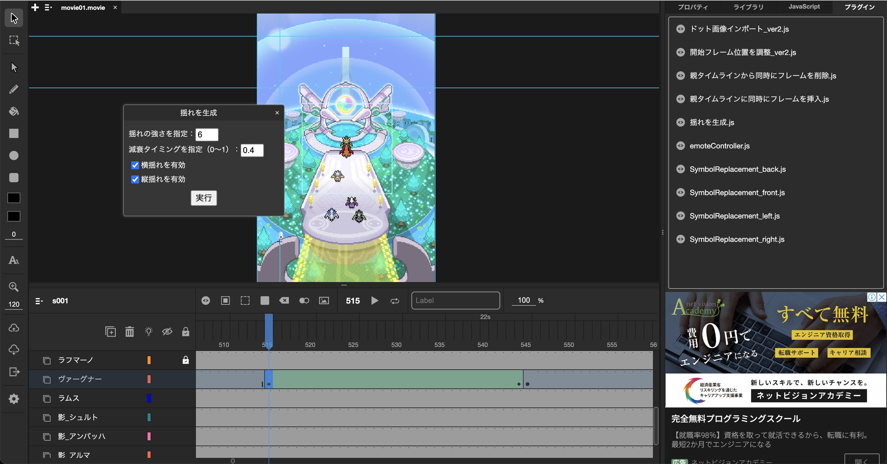

WORLD FLIPPER
© Cygames, Inc. / Citail Inc.

ゲーム紹介
『WORLD FLIPPER』は、株式会社Cygamesと株式会社シテイルが共同制作したスマートフォン向けのゲームです。
このゲームは、キャラクターそのものがピンボールとなり、敵にぶつかりながらダメージを与えていく独特のゲームプレイを楽しむことができます。バトルシーンでは、各キャラクターがドットで描かれ、まるで実際に体当たりしているかのような感覚を味わえます。特にキャラクターのスキル発動時には、精巧なドット絵アニメーションがプレイヤーを魅了します。
このゲームは、キャラクターそのものがピンボールとなり、敵にぶつかりながらダメージを与えていく独特のゲームプレイを楽しむことができます。バトルシーンでは、各キャラクターがドットで描かれ、まるで実際に体当たりしているかのような感覚を味わえます。特にキャラクターのスキル発動時には、精巧なドット絵アニメーションがプレイヤーを魅了します。
導入事例

アニメーションの制作はAdobe Animateが採用されており、JSFL(JavaScript for Flash)という、JavaScriptがベースとなっている言語を利用して、作業のコマンド化・効率化・自動化行われています。
Next2D Animation Toolにもプラグイン機能があり、同じくJavaScriptでタイムラインやレイヤーの操作をコマンド化・効率化・自動化する事が可能です。
『WORLD FLIPPER』では、Next2D Animation Toolのプラグイン機能を利用したアニメーション制作手法が導入され、クリエイターは手間のかかる作業から解放され、よりクリエイティブな表現に集中できるよう努めました。
制作したアニメーションは、iOS/Androidで読み込みができるよう、独自のJSONや画像データとして書き出しました。書き出し機能はプラグイン機能のJavaScriptでコントロールする事で柔軟に書き出すことが可能です。
Next2D Animation Toolにもプラグイン機能があり、同じくJavaScriptでタイムラインやレイヤーの操作をコマンド化・効率化・自動化する事が可能です。
『WORLD FLIPPER』では、Next2D Animation Toolのプラグイン機能を利用したアニメーション制作手法が導入され、クリエイターは手間のかかる作業から解放され、よりクリエイティブな表現に集中できるよう努めました。
制作したアニメーションは、iOS/Androidで読み込みができるよう、独自のJSONや画像データとして書き出しました。書き出し機能はプラグイン機能のJavaScriptでコントロールする事で柔軟に書き出すことが可能です。